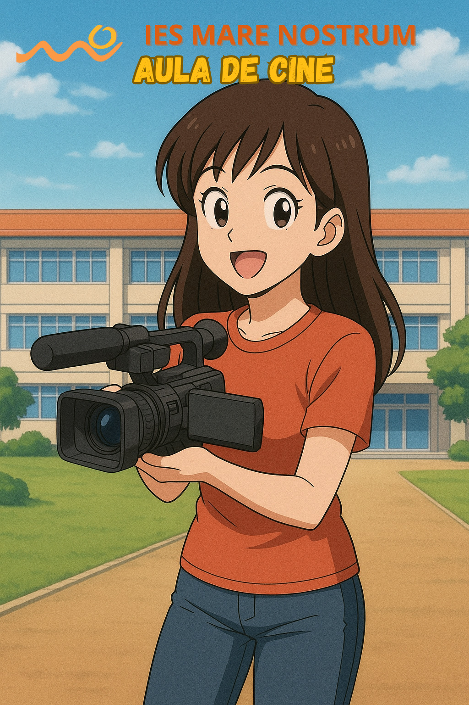

¿Por qué merece la pena contar esta historia y mostrarla a los demás?
 El centro IES Mare Nostrum, hace una apuesta definitiva por la alfabetización audiovisual.
El centro IES Mare Nostrum, hace una apuesta definitiva por la alfabetización audiovisual.
Este año se da continuidad a través del programa CIMA que engloba a todos los programas educativos, entre ellos el de “Arte, Cultura y Creatividad” desde el que se coordina el “Aula de Cine”.
El centro posee una amplia oferta educativa de ESO, Bachillerato y ciclos formativos de grados medio y superior en las ramas de Administración y Electrónica, y se caracteriza por fomentar la creatividad de los alumnos.
El programa educativo CIMA, da indicaciones concretas sobre los fines específicos que persigue, se apoya en los tres pilares de los que consta el programa:
- Alfabetización mediática: proyectos de centros orientados a comprender los elementos básicos del lenguaje audiovisual por parte del alumnado: imagen, planos, escenas.
- Ver cine: proyectos que vinculan el conocimiento y la comprensión del cine a través de su visionado, con actividades prácticas que se implementan en el aula o salas de cine.
- Hacer cine: proyectos de elaboración de productos propios, un spot para una campaña promocional o publicitaria, un cortometraje, cine documental, etc. Abordando todos los pasos de preproducción, producción y postproducción, de forma teórica y práctica.

Imagen generada por alumnado del IES Mare Nostrum a través de IA (CC BY-SA)

El presente documento es el punto de partida, dentro del programa CIMA, en la creación de un producto audiovisual “Hacer Cine”. para ello se ha optado por la producción de un cortometraje de ficción:
-
Título: LA HERRADURA.
-
Formato: Cortometraje.
-
Duración: 10 min.
-
Género: Ficción, comedia, drama.
-
La premisa: La herradura, es esa herramienta que nos hará avanzar por la vida, sin importar como de duro o irregular que sea el camino.